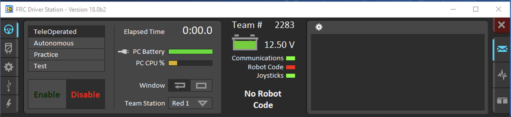

The Robot Class
The robot class is a special class because each method inherited from TimedRobot is executed conditionally at runtime without you as a coder having to call them. This is akin to main() being called when you run a java or c++ program. You don’t need to worry about how this happens, just understand what functions are called and when.
Driver Station has a display of the different states the robot can have:
{kind=link}
You can enable the robot in different states (TeleOperated, Autonomous, Practice, and Test) or keep it in the disabled state.
Every state has an Init and Periodic function. As soon as you put the robot in one of these states, its init function will be called. After the state is entered, the periodic function for that state will continuously be called every 20ms while the state is active.
For example, if I enable the robot and TeleOperated is selected on Driver Station, as soon as I enable TeleopInit() will be called once. Then every 20ms while the robot remains enabled and in the TeleOperated state, TeleopPeriodic() will be called.
The RobotInit() and RobotPeriodic() functions are the only functions not tied to a state. RobotInit is called as soon as the robot is powered on, and RobotPeriodic is called every 20ms while the robot is on, regardless of the state.
We don’t use the practice or simulation states, although if you’d like to you are free to figure out how.